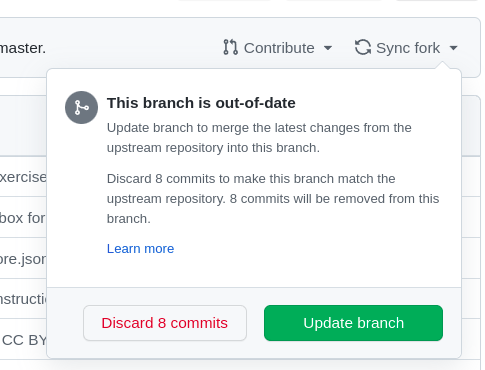

GitHub is a code hosting platform for version control and collaboration. It lets you and others work together on projects from anywhere.
Yes, Gitlab, Gitea and many more
How to search for a project and star it?
Search for a project in your subject and star it.(some topics - open source university, awesome)


Edit the README file with little introduction of file, comment and save changes, refer to markdown cheatsheet
Have you ever saved different versions of a file? Something like:


Now you have two branches, main and activity1-notes. Right now, they look exactly the same. Next you’ll add changes to the new branch.


Now that your pull request is merged and your changes are on main, you can safely delete the 1-edit-readme branch. If you want to make more changes to your project, you can always create a new branch and repeat this process.
After you merge your pull request, the changes on your 1-edit-readme branch will be incorporated into main.
You can create your custom profile that would be displayed whenever some user visits your profile.
Markdown consists of a set of symbols inserted in a document ending with .md suffix to control its structure, formatting, or the relationship between its parts.
No, Open source software is based on the idea that by sharing code, we can make better, more reliable software.
Repo owner can choose various licenses that determine how you want your project to be shared with others.



Please repeat this exercise a number of times to get an idea of whole process
SESSION 1 - Getting Started with Github
THE END